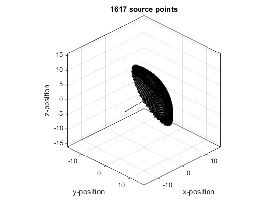

makeCartBowl
Create evenly distributed Cartesian points covering a bowl.
Syntax
[points, scale] = makeCartBowl(kgrid, bowl_pos, radius, diameter, focus_pos)
Description
makeCartBowl creates a 3 x num_points array of the Cartesian coordinates of points evenly disributed over a bowl.
Examples
% create grid Nx = 32; Ny = Nx; Nz = Nx; dx = 1; dy = dx; dz = dx; kgrid = kWaveGrid(Nx, dx, Ny, dy, Nz, dz); % create bowl bowl_pos = [4, 4, 4]; radius = 15; diameter = 21; focus_pos = -bowl_pos; points = makeCartBowl(kgrid, bowl_pos, radius, diameter, focus_pos); num_points = size(points, 2); % plot points figure plot3(points(2,:), points(1,:), points(3,:), 'k.') % plot beam axis dp = focus_pos-bowl_pos; hold on quiver3(bowl_pos(2), bowl_pos(1), bowl_pos(3), dp(2), dp(1), dp(3), 0, 'k') % adjust plot axes view(45,30), axis equal, box on, grid on axis(0.5*[kgrid.y_size .* [-1, 1], kgrid.x_size .* [-1, 1], kgrid.z_size .* [-1, 1]]) xlabel('y-position'), ylabel('x-position'),zlabel('z-position') title(sprintf('%d source points', num_points))
Inputs
kgrid |
the kgrid object on which the simulation will take place |
bowl_pos |
centre of the rear surface of the bowl given as a three element vector [bx, by, bz] [m] |
radius |
radius of curvature of the bowl [m] |
diameter |
diameter of the opening of the bowl [m] |
focus_pos |
any point on the beam axis of the bowl given as a three element vector [fx, fy, fz] [m] |
Outputs
points |
3 x num_points array of Cartesian coordinates |
scale |
scaling factor relating the density of Cartesian points to the density of kgrid nodes |
See Also
offGridBowl